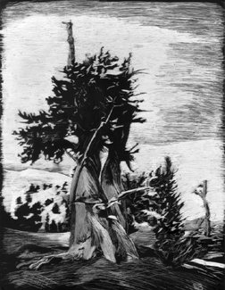

Student Project
Willie

When I'm in a tree I feel small in comparison to the rest of the world. But also large to the animals in the tree. I feel solemn and peaceful. The silence is very peaceful and it makes people think.
-Willie
c. Willie
ALbert Lowry High School
Winnemucca, Nevada USA
Silver Scratchboard 9 "X12"
Bristlecone Pine
Latin Name: Pinus Aristata
Age: 4,600 years
Circumference: TBA
Location: Great Basin National Park
Ely, Nevada
 Return to Main Page
Return to Main Page
June Julian jj68@nyu.edu